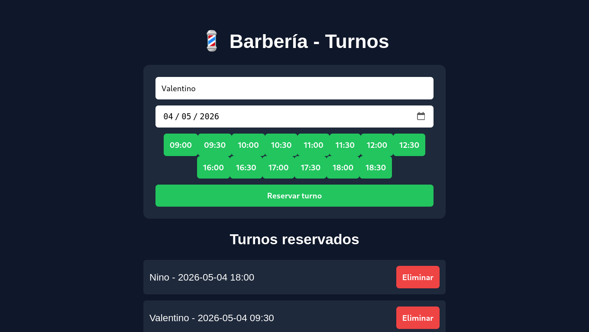

Sobre mí
Soy desarrollador web enfocado en crear soluciones simples, funcionales y rápidas de implementar. Trabajo con Flask, JavaScript y bases de datos para construir sistemas útiles para negocios.
Proyectos

Turnos Barbería
Sistema de turnos online para barberías que necesitan organizar reservas sin usar WhatsApp. Permite a los clientes elegir horarios disponibles y evita superposiciones automáticamente.
Incluye:
- Reserva de turnos en tiempo real
- Bloqueo de horarios ocupados
- Persistencia con backend en Flask

Refugio Libre
Sitio web institucional para mejorar la presencia online de una organización, facilitando el acceso a información y aumentando la visibilidad.
Ver proyecto
Sistema de Cursos
Sistema web para gestionar cursos y alumnos, pensado para emprendimientos educativos que necesitan organizar contenido y administración de forma simple.
Demo en vivo:
Probar sistemaQué puedo hacer
- ✔ Sistemas de turnos online
- ✔ CRUDs con backend (Flask / PHP)
- ✔ Integración con bases de datos
- ✔ Deploy de aplicaciones web